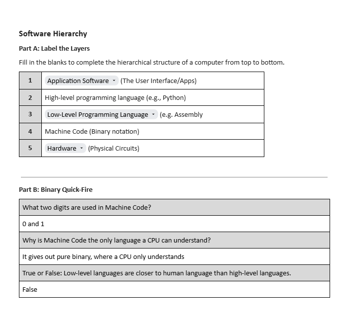

<!DOCTYPE html>

<html>
	<head>
		<title> | Digital Portfolio | </title>
		<style>
			body {
				font-family: Segoe, "Segoe UI", "DejaVu Sans", "Trebuchet MS", Verdana, "sans-serif";
				background-color: #C5DCFC;
				margin: 0 auto;
				padding: 20px;
				border-style: inset;
				border-color: darkblue;
				border-bottom: 200px;
				max-width: 1000px;
				overflow: auto;
			}
			h1 {
				color: #44763E;	
			}
			p {
				color: #161716;
			}
			
			h1 {
				text-align: center;
			}
			
			img {
				border-style: outset;
				border-color: darkblue;
			}
			
			img#top {
				width: 100%;
				height: auto;
				display: block;
				margin-bottom: 20px;
			}			a:link {color: #689F38}
			a:visited {color: #234416}
			a:hover {color: #66BB6A}			a:link {color: #689F38}
			a:visited {color: #234416}
			a:hover {color: #66BB6A}
			
			.text {
				max-width: 600px;
				height: 300px;
				padding: 50px;
				border: 2px solid #235099;
				box-sizing: border-box;
				display: block;
				font-size: 16px;
				resize: none;
				align-self: center;
				margin: 0 auto;
				gap: 20px;
				
			}
			
			.gap {
			}

			.center {
					display: grid;
					place-items: center;
					height: 45vh;
			}
			
			a {
				font-size: 26px;
			}
		</style>
	</head>
</html>

<body>
		
		<p align="center">
			<a href="index.html">Homepage</a>
			<a href="u1.html">Unit 1</a>
			<a href="u2.html">Unit 2</a>
			<a href="u8.html">Unit 8</a>
			<a href="u13.html">Unit 13</a>
			<a href="u14.html">Unit 14</a>
			<a href="u17.html">Unit 17</a>
		</p>
	<h1> Unit 2 | Technology Systems </h1>
	
	<p align="center" class="text">Unit 2 is also another external assessment for this course. This one covers how computers work in the background, and explaining how they perform and maintain on each specific hardware. I have learnt about how motherboards work, CPU's work, how transmissions work, and many other things. My time learning this unit is very cool and it helps me understand and learn more on how computers work. On the next website; which is "Unit 14", it goes into deep explanation on how hardware works and more. You should check it out! </p>
	
<div class="center">

</div>
<p class="text" style="text-align: center;" style="text-size-adjust: auto;"> In this image, it talks about how different softwares have a different hiearchy, ranging from the applications itself to the main physical hardware which talks to the software. I chose this one because its so astonishing and I think i would like to learn how to code with Assembly.</p>
	
<p align="center">If you want to learn a bit more on how computers work, this <a href="https://www.knowitallninja.com/" target="_blank"> revision link </a> helps understand how computers work.</p>

</body>